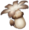
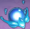
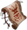
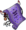

A Diaconisa da Igreja Favonius e uma estrela brilhante adorada por todos. Embora o conceito de estrela seja bastante novo em uma cidade de bardos, o povo de Mondstadt ama Barbara mesmo assim.
Todos os habitantes de Mondstadt adoram Barbara. No entanto, ela aprendeu a palavra "ídolo" em uma revista. - Perfil no jogo Bárbara é a diaconisa da Igreja Favonius, bem como o ídolo brilhante de Mondstadt. “A visão de Bárbara faz todos os meus problemas desaparecerem”. Este é um ditado bastante comum entre os habitantes de Mondstadt. Na verdade, Bárbara pode fazer muito mais do que apenas deixar as pessoas de melhor humor: seus poderes de cura estendem-se a feridas na pele e outras doenças físicas. Barbara é conhecida por ter acesso a poderes de cura milagrosos por meio de sua Hydro Vision. No entanto, a própria Bárbara sabe que a magia mais milagrosa de todas é o trabalho árduo. "
Bárbara tem uma constituição pequena e miúda, com cabelo loiro acinzentado e olhos azuis. Ela usa um vestido branco que é aberto nos ombros com babados azuis e forro dourado, juntamente com meia-calça branca, sapatilhas pretas com salto em bloco e um boné azul e branco que lembra um boné de enfermeira com uma cruz dourada na frente Um livro de feitiços adornado com ouro com uma capa azul clara e um pequeno pingente de cruz está pendurado ao lado dela, preso a uma tira preta presa por um aro de ouro.
Todos os habitantes de Mondstadt adoram Barbara. No entanto, nem sempre foi assim. No início, as canções de Bárbara soaram estranhas para os habitantes de Mondstadt, e muitos lutaram para ver o apelo. Isso porque, por muito tempo, as canções folclóricas dos bardos foram as únicas canções populares conhecidas em Mondstadt. Felizmente, Mondstadt permaneceu fiel à sua reputação de Cidade da Liberdade, e as pessoas acabaram aceitando o novo enquanto continuavam a valorizar o antigo. As pessoas aceitaram as canções de Bárbara e, com o tempo, sua energia positiva foi passando para elas. Logo, eles podiam ser ouvidos cantarolando suas músicas por toda Mondstadt. "Albert, pare, por favor! Você está completamente desafinado!"
Os sentimentos de Bárbara sobre seu próprio sucesso são mistos. Na medida em que o dever de um ídolo é fazer com que todos a adorem, ela fez um trabalho fantástico. Não há dúvida de que ela fez a escolha certa. Porém, também se espera que um ídolo espalhe alegria e alivie o cansaço espiritual das pessoas ... Será que ela realmente conseguiu isso? Ela cantou para a cega Glory, encorajando-a a acreditar que seu amante um dia retornaria. Ela cantou também para a doente Anna, prometendo-lhe que um dia a sua doença seria curada. No entanto, os sorrisos em seus rostos nunca duram muito depois do fim da música. Isso levou Bárbara a ficar um tanto desiludida e duvidosa.

Ataque Normal:
Realiza até 4 ataques com esguinchos de água que infligem Dano Hydro.
Ataque Carregado:
Consome uma certa quantidade de Stamina para infligir Dano Hydro em um AdE após um curto período de canalizaçāo.
Ataque Imersivo:
Reunindo o poder do Hydro, Barbara mergulha em direçāo ao chāo em pleno ar, infligindo dano a todos os inimigos em seu caminho. Inflige Dano Hydro em uma AdE durante o impacto com o chāo.
| Dano de 1º Golpe | 37.8% |
|---|---|
| Dano de 2º Golpe | 35.5% |
| Dano de 3º Golpe | 41% |
| Dano de 4º Golpe | 55.2% |
| Dano de Ataque Carregado | 166% |
| Consumo de Stamina de Ataque Carregado | 50 |
| Dano Durante a Queda | 56.8% |
| Dano de Queda de Alta/Baixa Altitude |
114% / 142% |

Invoca Gotas d'Água em formatos de notas musicais que formam um Loop de Melodia, causando Dano Hydro aos inimigos ao redor, colocando-se em estado Molhado
Loop de Melodia
Os ataques Normais de Barbara curam todos os membros da equipe e os personagens aliados ao redor em certo valor de Vida Seu Ataque Carregado gera 4x a quantidade de cura. Regenera uma certa quantidade da Vida atual do personagem atual em intervalos regulares. Aplica o estado de Molhado ao personagem e inimigos que entrarem em contato com eles.
A música de Barbara é a mágica que cura suas companhias
| Regeneraçāo de Vida por Acerto | 0.75% da vida max +72 |
|---|---|
| Regeneraçāo Continua | 4% da vida max +385 |
| Dando de Gotas d'Água | 58.4% |
| Duração | 15s |
| Tempo de Recarga | 32s |

Cura todas as partes e forças aliadas em uma grande quantidade de Vida que aumenta com a Vida Máxima de Barbara.
O desejo de Barbara de curar fortalece sua vontade de lutar e cantar.
| Regeneraçāo | 17.6% da vida max + 1,694 | Tempo de Recarga | 20s |
|---|---|
| Energia Elemental | 80 |

O Consumo de Stamina dos personagens dentro do loop da melodia de Que Comece o Espetáculo ♪ é reduzido em 12%.

Quando um personagem ganha um Orbe/Partícula Elemental, a duraçāo do Loop da Melodia do Que Comece o Espetáculo ♪ é extendido em 1s. A extensāo máxima é de 5s.
Quando uma Culinária Perfeitra é feita em uma comida com efeito de recuperaçāo, tem uma chance de 12% de receber o dobro de produçāo.

Barbara regenera 1 de Energia a cada 10s.

Diminui a Recarga do Que Comece o Espetáculo ♪ por 15%. Durante a duraçāo da habilidade, o personagem atual ganha 15% de Bonús de Dano Hydro Skyward Sonnet diminui a RES Anemo do inimigo em 12% por 10s. Os inimigos lançados pelo Skyward Sonnet sofrem uma redução adicional de 12% no RES do Anemo e no RES física durante o vôo.

Aumenta o nível do Milagre Brilhante ♪ em 3. O nível máximo de elevaçāo é 15.

Sempre que os Ataques Carregados da Barbara acertar um inimigo faz com que ela regenere 1 de Energia. É possivel regenerar um máximo de 5 de Energia desta maneira por vez.
Aumente o nível do Que Comece o Espetáculo ♪ em 3. O nível máximo de atualização é 15.

Quando a Barbara nāo está no campo de batalha, e o personagem da própria equipe for abatido
Revive automaticamente este personagem. Regenera totalmente a VIda deste personagem até 100%, este efeito pode ser ativado uma vez a cada 15 mins.

Embora ela não vá aumentar o dano causado por sua equipe, Barbara manterá todas as suas unidades vivas e saudáveis. A maior cura virá de sua Explosão Elemental, seguida pelo uso de Ataques Carregados com Que Comece o Espetáculo ativo e, finalmente, a cura passiva de Que Comece o Espetáculo.

Usar uma Explosão Elemental regenera 4/4.5/5/5.5/6 Energia a cada 2s por 6s. Além disso, todos os membros do grupo irão regenerar 4/4.5/5/5.5/6% HP a cada 2s durante este período.

(2) Eficácia de cura de personagem + 15%
(4) Usar uma habilidade elemental ou explosão aumenta a cura recebida por todos os membros do grupo em 20% por 10s.
| Ascensão | Max Lv. |  |
Material Elemental 1 | Material Elemental 2 | Especialidade Local | Material Comum |
|---|---|---|---|---|---|---|
| 1st | 20 | 20,000 | Prata de Lazurita Varunada x1 |
Nenhum |  Cogumelo Philanemo x3 |
 Pergaminho Guia x3 |
| 2nd | 40 | 40,000 | Fragmento de Lazurita Varunada x3 |
 Coraçāo Purificador x2 |
Cogumelo Philanemo x10 |
Pergaminho Guia x15 |
| 3rd | 50 | 60,000 | Fragmento de Lazurita Varunada x6 |
Coraçāo Purificador x4 |
Cogumelo Philanemo x20 |
 Pergaminho do Encantamento x12 |
| 4th | 60 | 80,000 | Pedaço de Lazurita Varunada x3 |
Coraçāo Purificador x8 |
Cogumelo Philanemo x30 |
Pergaminho do Encantamento x18 |
| 5th | 70 | 240,000 | Pedaço de Lazurita Varunada x6 |
Coraçāo Purificador x12 |
Cogumelo Philanemo x45 |
 Pergaminho da Maldiçāo x16 |
| 6th | 80 | ? | Gema de de Lazurita Varunada x6 |
Coraçāo Purificador x20 |
Cogumelo Philanemo x60 |
Pergaminho da Maldiçāo x24 |
| Máximo | 90 | Max | Max | Max | Max | Max |